33. 贝叶斯与频率主义决策规则的比较#
import matplotlib.pyplot as plt
import matplotlib as mpl
FONTPATH = "fonts/SourceHanSerifSC-SemiBold.otf"
mpl.font_manager.fontManager.addfont(FONTPATH)
plt.rcParams['font.family'] = ['Source Han Serif SC']
import numpy as np
from numba import jit, prange, float64, int64
from numba.experimental import jitclass
from math import gamma
from scipy.optimize import minimize
33.1. 概述#
本讲座延续了以下讲座中提出的观点：
令米尔顿·弗里德曼困惑的问题描述了二战期间一位海军上尉向米尔顿·弗里德曼提出的问题。
海军告诉这位上尉要使用一个质量控制决策规则。
具体来说，海军命令上尉使用一个频率主义决策规则的实例。
上尉怀疑这个规则是否是一个好规则。
米尔顿·弗里德曼认识到上尉的推测提出了一个具有挑战性的统计问题，他和哥伦比亚大学美国政府统计研究小组的其他成员随后试图解决这个问题。
该小组的成员之一，伟大的数学家和经济学家亚伯拉罕·瓦尔德很快就解决了这个问题。
阐述这个问题的一个好方法是使用一些贝叶斯统计中的思想，这些思想我们在讲座可交换性和贝叶斯更新和讲座似然比过程中有所描述，后者阐述了贝叶斯更新和似然比过程之间的联系。
本讲座使用Python生成模拟，评估在海军上尉所质疑的Neyman-Pearson频率主义程序，以及弗里德曼与瓦尔德问题的贝叶斯表述中描述的贝叶斯决策规则下的预期损失。
这些模拟证实了海军上尉的直觉，即存在一个比海军命令他使用的Neyman-Pearson似然比检验更好的规则。
33.2. 设置#
为了形式化困扰海军上尉的问题，我们考虑一个包含以下部分的设定。
每个时期决策者都会抽取一个非负随机变量 \(Z\)。他知道可能存在两种概率分布，\(f_{0}\)和\(f_{1}\)，并且无论是哪种分布都会随时间保持不变。决策者认为在时间开始之前，自然界一次性地选择了\(f_{0}\)或\(f_1\)，且选择\(f_0\)的概率为\(\pi^{*}\)。
决策者从自然界选择的分布中观察到样本\(\left\{ z_{i}\right\} _{i=0}^{t}\)。
决策者想要确定究竟是哪个分布在支配\(Z\)。
他担心两种类型的错误以及它们将给他带来的损失。
第一类错误造成的损失\(\bar L_{1}\)，即当实际分布为\(f=f_{0}\)时却判定\(f=f_{1}\)
第二类错误造成的损失\(\bar L_{0}\)，即当实际分布为\(f=f_{1}\)时却判定\(f=f_{0}\)
决策者需要支付成本\(c\)来获取另一个\(z\)。
我们主要借鉴了quantecon讲座弗里德曼与瓦尔德问题的贝叶斯表述中的参数，不过我们将\(\bar L_{0}\)和\(\bar L_{1}\)都从\(25\)增加到了\(100\)，以鼓励贝叶斯决策规则在做决定前进行更多次抽样。
我们将每次额外抽样的成本\(c\)设为\(1.25\)。
我们将概率分布\(f_{0}\)和\(f_{1}\)设定为贝塔分布，其中\(a_{0}=b_{0}=1\)，\(a_{1}=3\)，且\(b_{1}=1.2\)。
下面是设置这些对象的Python代码。
@jit
def p(x, a, b):
"贝塔分布。"
r = gamma(a + b) / (gamma(a) * gamma(b))
return r * x**(a-1) * (1 - x)**(b-1)
我们首先定义一个jitclass，用于存储参数和函数，这些参数和函数将用于解决贝叶斯派和频率派海军上尉的问题。
wf_data = [
('c', float64), # 失业补偿
('a0', float64), # beta分布的参数
('b0', float64),
('a1', float64),
('b1', float64),
('L0', float64), # 当f1为真时选择f0的成本
('L1', float64), # 当f0为真时选择f1的成本
('π_grid', float64[:]), # 信念π的网格
('π_grid_size', int64),
('mc_size', int64), # 蒙特卡洛模拟的规模
('z0', float64[:]), # 随机值序列
('z1', float64[:]) # 随机值序列
]
@jitclass(wf_data)
class WaldFriedman:
def __init__(self,
c=1.25,
a0=1,
b0=1,
a1=3,
b1=1.2,
L0=100,
L1=100,
π_grid_size=200,
mc_size=1000):
self.c, self.π_grid_size = c, π_grid_size
self.a0, self.b0, self.a1, self.b1 = a0, b0, a1, b1
self.L0, self.L1 = L0, L1
self.π_grid = np.linspace(0, 1, π_grid_size)
self.mc_size = mc_size
self.z0 = np.random.beta(a0, b0, mc_size)
self.z1 = np.random.beta(a1, b1, mc_size)
def f0(self, x):
return p(x, self.a0, self.b0)
def f1(self, x):
return p(x, self.a1, self.b1)
def κ(self, z, π):
"""
使用贝叶斯法则和当前观测值z更新π
"""
a0, b0, a1, b1 = self.a0, self.b0, self.a1, self.b1
π_f0, π_f1 = π * p(z, a0, b0), (1 - π) * p(z, a1, b1)
π_new = π_f0 / (π_f0 + π_f1)
return π_new
wf = WaldFriedman()
grid = np.linspace(0, 1, 50)
plt.figure()
plt.title("两个分布")
plt.plot(grid, wf.f0(grid), lw=2, label="$f_0$")
plt.plot(grid, wf.f1(grid), lw=2, label="$f_1$")
plt.legend()
plt.xlabel("$z$ 值")
plt.ylabel("$z_k$ 的密度")
plt.tight_layout()
plt.show()
findfont: Failed to find font weight normal, now using 600.
findfont: Failed to find font weight normal, now using 600.
findfont: Failed to find font weight normal, now using 600.
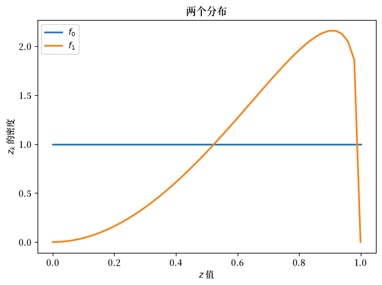
上面，我们绘制了两个可能的概率密度 \(f_0\) 和 \(f_1\)
33.3. 频率主义决策规则#
海军告诉上尉要使用Neyman-Pearson似然比决策规则。
该决策规则的特征是由：
样本量 \(t\)，以及
似然比的临界值 \(d\)
令 \(L\left(z^{t}\right)=\prod_{i=0}^{t}\frac{f_{0}\left(z_{i}\right)}{f_{1}\left(z_{i}\right)}\) 为观察序列 \(\left\{ z_{i}\right\} _{i=0}^{t}\) 的似然比。
与样本量 \(t\) 相关的决策规则是：
如果似然比大于 \(d\)，则判定 \(f_0\) 是分布
如果似然比小于 \(d\)，则判定 \(f_1\) 是分布
为此，我们想要计算使用这一规则所产生的预期损失，其中我们借用了弗里德曼与瓦尔德问题的贝叶斯表述中的损失参数\(\bar L_1\)和\(\bar L_2\)。
令零假设和备择假设为
零假设：\(H_{0}\)：\(f=f_{0}\)，
备择假设 \(H_{1}\)：\(f=f_{1}\)。
在给定样本量 \(t\) 和临界值 \(d\) 的情况下，在上述模型下， 总损失的数学期望为
这里
\(PFA\) 表示虚警的概率，即 当 \(H_0\) 为真时却拒绝它
\(PD\) 表示检测错误的概率，即 当 \(H_1\) 为真时却没有拒绝 \(H_0\)
对于给定的样本量 \(t\)，\(\left(PFA,PD\right)\) 对 位于接收者操作特征曲线上。
通过选择 \(d\)，我们为给定的 \(t\) 选择曲线上的一个特定 \(\left(PFA,PD\right)\) 对
要查看一些接收者操作特征曲线，请参阅本课程 似然比过程。
要数值求解 \(\bar{V}_{fre}\left(t,d\right)\)，我们首先 模拟当\(f_0\)或\(f_1\)生成数据时的\(z\)序列。
让我们绘制与\(f_0\)和\(f_1\)相关的经验分布（即直方图）。
N = 10000
T = 100
z0_arr = np.random.beta(wf.a0, wf.b0, (N, T))
z1_arr = np.random.beta(wf.a1, wf.b1, (N, T))
plt.hist(z0_arr.flatten(), bins=50, alpha=0.4, label='f0')
plt.hist(z1_arr.flatten(), bins=50, alpha=0.4, label='f1')
plt.legend()
plt.show()
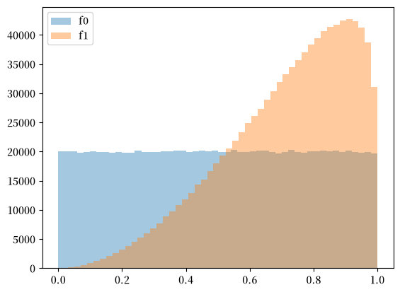
我们可以使用模拟样本计算似然比序列。
l = lambda z: wf.f0(z) / wf.f1(z)
l0_arr = l(z0_arr)
l1_arr = l(z1_arr)
L0_arr = np.cumprod(l0_arr, 1)
L1_arr = np.cumprod(l1_arr, 1)
有了似然比的经验分布后，我们可以通过列举每个样本量 \(t\) 下的 \(\left(PFA,PD\right)\) 对来绘制接收者操作特征曲线。
PFA = np.arange(0, 100, 1)
for t in range(1, 15, 4):
percentile = np.percentile(L0_arr[:, t], PFA)
PD = [np.sum(L1_arr[:, t] < p) / N for p in percentile]
plt.plot(PFA / 100, PD, label=f"t={t}")
plt.scatter(0, 1, label="perfect detection")
plt.plot([0, 1], [0, 1], color='k', ls='--', label="random detection")
plt.arrow(0.5, 0.5, -0.15, 0.15, head_width=0.03)
plt.text(0.35, 0.7, "better")
plt.xlabel("虚警概率")
plt.ylabel("检测概率")
plt.legend()
plt.title("接收者操作特征曲线")
plt.show()
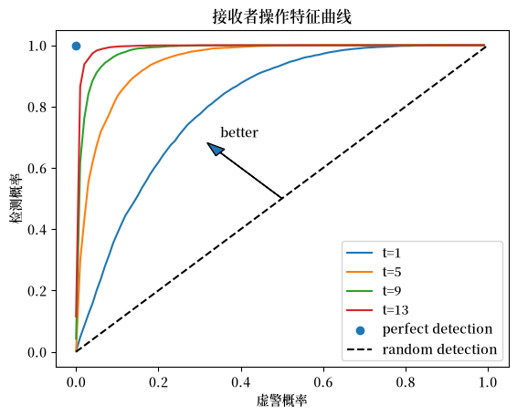
我们可以通过选择 \(\left(t,d\right)\) 来最小化方程(33.1)中给出的预期总损失。
这样做会得到预期损失
我们首先考虑 \(\pi^{*}=\Pr\left\{ \text{自然选择}f_{0}\right\} =0.5\) 的情况。
我们可以通过两个步骤来解决这个最小化问题。
首先，我们固定\(t\)并找到最优截断值\(d\)， 从而得到最小值\(\bar{V}_{fre}\left(t\right)\)。
以下是执行该操作并绘制有用图表的Python代码。
@jit
def V_fre_d_t(d, t, L0_arr, L1_arr, π_star, wf):
N = L0_arr.shape[0]
PFA = np.sum(L0_arr[:, t-1] < d) / N
PD = np.sum(L1_arr[:, t-1] < d) / N
V = π_star * PFA * wf.L1 + (1 - π_star) * (1 - PD) * wf.L0
return V
def V_fre_t(t, L0_arr, L1_arr, π_star, wf):
res = minimize(V_fre_d_t, 1, args=(t, L0_arr, L1_arr, π_star, wf), method='Nelder-Mead')
V = res.fun
d = res.x
PFA = np.sum(L0_arr[:, t-1] < d) / N
PD = np.sum(L1_arr[:, t-1] < d) / N
return V, PFA, PD
def compute_V_fre(L0_arr, L1_arr, π_star, wf):
T = L0_arr.shape[1]
V_fre_arr = np.empty(T)
PFA_arr = np.empty(T)
PD_arr = np.empty(T)
for t in range(1, T+1):
V, PFA, PD = V_fre_t(t, L0_arr, L1_arr, π_star, wf)
V_fre_arr[t-1] = wf.c * t + V
PFA_arr[t-1] = PFA
PD_arr[t-1] = PD
return V_fre_arr, PFA_arr, PD_arr
π_star = 0.5
V_fre_arr, PFA_arr, PD_arr = compute_V_fre(L0_arr, L1_arr, π_star, wf)
plt.plot(range(T), V_fre_arr, label=r'$\min_{d} \overline{V}_{fre}(t,d)$')
plt.xlabel('时间t')
plt.title(r'$\pi^*=0.5$')
plt.legend()
plt.show()
findfont: Failed to find font weight normal, now using 600.
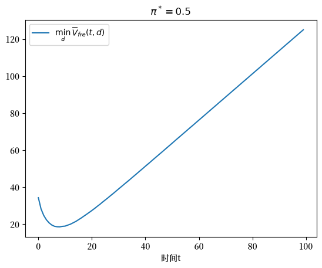
t_optimal = np.argmin(V_fre_arr) + 1
上图说明了对\(t\)进行最小化如何告诉频率派要抽取\(t_{\rm optimal}\)个观测值然后做出决定。
现在让我们改变 \(\pi^{*}\) 的值，观察决策规则如何变化。
n_π = 20
π_star_arr = np.linspace(0.1, 0.9, n_π)
V_fre_bar_arr = np.empty(n_π)
t_optimal_arr = np.empty(n_π)
PFA_optimal_arr = np.empty(n_π)
PD_optimal_arr = np.empty(n_π)
for i, π_star in enumerate(π_star_arr):
V_fre_arr, PFA_arr, PD_arr = compute_V_fre(L0_arr, L1_arr, π_star, wf)
t_idx = np.argmin(V_fre_arr)
V_fre_bar_arr[i] = V_fre_arr[t_idx]
t_optimal_arr[i] = t_idx + 1
PFA_optimal_arr[i] = PFA_arr[t_idx]
PD_optimal_arr[i] = PD_arr[t_idx]
plt.plot(π_star_arr, V_fre_bar_arr)
plt.xlabel(r'$\pi^*$')
plt.title(r'$\overline{V}_{fre}$')
plt.show()
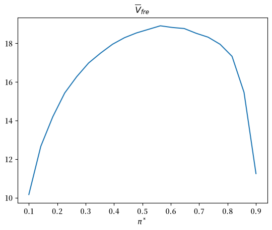
下图展示了当 \(\pi^{*}\) 变化时，最优样本量 \(t\) 和目标 \(\left(PFA,PD\right)\) 如何变化。
fig, axs = plt.subplots(1, 2, figsize=(14, 5))
axs[0].plot(π_star_arr, t_optimal_arr)
axs[0].set_xlabel(r'$\pi^*$')
axs[0].set_title(r'给定$\pi^*$的最优样本量')
axs[1].plot(π_star_arr, PFA_optimal_arr, label=r'$PFA^*(\pi^*)$')
axs[1].plot(π_star_arr, PD_optimal_arr, label=r'$PD^*(\pi^*)$')
axs[1].set_xlabel(r'$\pi^*$')
axs[1].legend()
axs[1].set_title(r'给定$\pi^*$的最优PFA和PD')
plt.show()
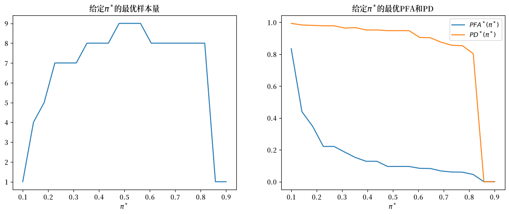
33.4. 贝叶斯决策规则#
在令米尔顿·弗里德曼困惑的问题中，我们了解到亚伯拉罕·瓦尔德如何证实了海军上尉的直觉，即存在一个更好的决策规则。
在弗里德曼与瓦尔德问题的贝叶斯表述中，我们提出了一个贝叶斯程序，该程序通过比较贝叶斯后验概率\(\pi\)与称为\(A\)和\(B\)的临界概率来做出决策。
为了继续，我们从quantecon讲座弗里德曼与瓦尔德问题的贝叶斯表述中借用一些Python代码，用于计算\(A\)和\(B\)的最优值。
@jit(parallel=True)
def Q(h, wf):
c, π_grid = wf.c, wf.π_grid
L0, L1 = wf.L0, wf.L1
z0, z1 = wf.z0, wf.z1
mc_size = wf.mc_size
κ = wf.κ
h_new = np.empty_like(π_grid)
h_func = lambda p: np.interp(p, π_grid, h)
for i in prange(len(π_grid)):
π = π_grid[i]
# Find the expected value of J by integrating over z
integral_f0, integral_f1 = 0, 0
for m in range(mc_size):
π_0 = κ(z0[m], π) # Draw z from f0 and update π
integral_f0 += min((1 - π_0) * L0, π_0 * L1, h_func(π_0))
π_1 = κ(z1[m], π) # Draw z from f1 and update π
integral_f1 += min((1 - π_1) * L0, π_1 * L1, h_func(π_1))
integral = (π * integral_f0 + (1 - π) * integral_f1) / mc_size
h_new[i] = c + integral
return h_new
@jit
def solve_model(wf, tol=1e-4, max_iter=1000):
"""
计算延续值函数
* wf 是 WaldFriedman 的一个实例
"""
# 设置循环
h = np.zeros(len(wf.π_grid))
i = 0
error = tol + 1
while i < max_iter and error > tol:
h_new = Q(h, wf)
error = np.max(np.abs(h - h_new))
i += 1
h = h_new
if error > tol:
print("未能收敛！")
return h_new
h_star = solve_model(wf)
@jit
def find_cutoff_rule(wf, h):
"""
此函数接收一个延续值函数并返回相应的临界点，
这些临界点表示在继续和选择特定模型之间的转换位置
"""
π_grid = wf.π_grid
L0, L1 = wf.L0, wf.L1
# 在网格上所有点评估选择模型的成本
payoff_f0 = (1 - π_grid) * L0
payoff_f1 = π_grid * L1
# 通过将这些成本与贝尔曼方程的差值可以找到临界点
# (J始终小于或等于p_c_i)
B = π_grid[np.searchsorted(
payoff_f1 - np.minimum(h, payoff_f0),
1e-10)
- 1]
A = π_grid[np.searchsorted(
np.minimum(h, payoff_f1) - payoff_f0,
1e-10)
- 1]
return (B, A)
B, A = find_cutoff_rule(wf, h_star)
cost_L0 = (1 - wf.π_grid) * wf.L0
cost_L1 = wf.π_grid * wf.L1
fig, ax = plt.subplots(figsize=(10, 6))
ax.plot(wf.π_grid, h_star, label='延续值')
ax.plot(wf.π_grid, cost_L1, label='选择f1')
ax.plot(wf.π_grid, cost_L0, label='选择f0')
ax.plot(wf.π_grid,
np.amin(np.column_stack([h_star, cost_L0, cost_L1]),axis=1),
lw=15, alpha=0.1, color='b', label='最小成本')
ax.annotate(r"$B$", xy=(B + 0.01, 0.5), fontsize=14)
ax.annotate(r"$A$", xy=(A + 0.01, 0.5), fontsize=14)
plt.vlines(B, 0, B * wf.L0, linestyle="--")
plt.vlines(A, 0, (1 - A) * wf.L1, linestyle="--")
ax.set(xlim=(0, 1), ylim=(0, 0.5 * max(wf.L0, wf.L1)), ylabel="成本",
xlabel=r"$\pi$", title="值函数")
plt.legend(borderpad=1.1)
plt.show()
findfont: Failed to find font weight normal, now using 600.
findfont: Failed to find font weight normal, now using 600.
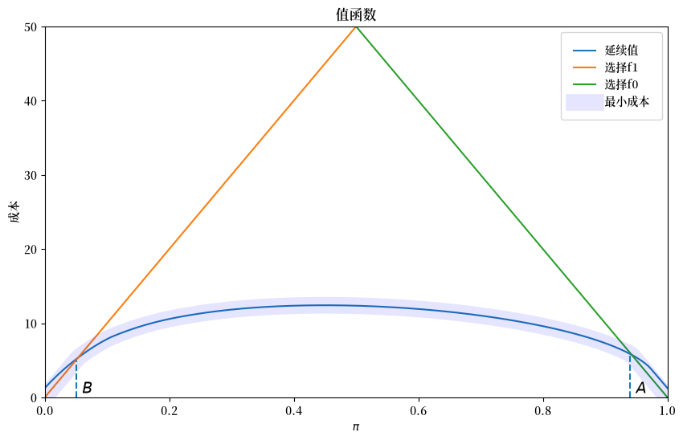
上图描绘了价值函数对决策者贝叶斯后验概率的关系。
图中还显示了临界概率 \(A\) 和 \(B\)。
贝叶斯决策规则是：
当 \(\pi \geq A\) 时接受 \(H_0\)
当 \(\pi \leq B\) 时接受 \(H_1\)
当 \(B \leq \pi \leq A\) 时延迟决定并抽取另一个 \(z\)
在这种情况下，我们可以计算两个”客观”损失函数，分别基于确知自然选择了 \(f_{0}\) 或 \(f_{1}\) 的条件。
在 \(f_{0}\) 下，
\[\begin{split} V^{0}\left(\pi\right)=\begin{cases} 0 & \text{if} A \leq\pi,\\ c+EV^{0}\left(\pi^{\prime}\right) & \text{if }B\leq\pi< A,\\ \bar L_{1} & \text{if }\pi<B. \end{cases} \end{split}\]在 \(f_{1}\) 下
\[\begin{split} V^{1}\left(\pi\right)=\begin{cases} \bar L_{0} & \text{if }A \leq\pi,\\ c+EV^{1}\left(\pi^{\prime}\right) & \text{if }B \leq\pi<A,\\ 0 & \text{if }\pi< B. \end{cases} \end{split}\]
其中 \(\pi^{\prime}=\frac{\pi f_{0}\left(z^{\prime}\right)}{\pi f_{0}\left(z^{\prime}\right)+\left(1-\pi\right)f_{1}\left(z^{\prime}\right)}\)。
给定先验概率 \(\pi_{0}\)，贝叶斯方法的期望损失为
下面我们编写一些 Python 代码来数值计算 \(V^{0}\left(\pi\right)\) 和 \(V^{1}\left(\pi\right)\)。
@jit(parallel=True)
def V_q(wf, flag):
V = np.zeros(wf.π_grid_size)
if flag == 0:
z_arr = wf.z0
V[wf.π_grid < B] = wf.L1
else:
z_arr = wf.z1
V[wf.π_grid >= A] = wf.L0
V_old = np.empty_like(V)
while True:
V_old[:] = V[:]
V[(B <= wf.π_grid) & (wf.π_grid < A)] = 0
for i in prange(len(wf.π_grid)):
π = wf.π_grid[i]
if π >= A or π < B:
continue
for j in prange(len(z_arr)):
π_next = wf.κ(z_arr[j], π)
V[i] += wf.c + np.interp(π_next, wf.π_grid, V_old)
V[i] /= wf.mc_size
if np.abs(V - V_old).max() < 1e-5:
break
return V
V0 = V_q(wf, 0)
V1 = V_q(wf, 1)
plt.plot(wf.π_grid, V0, label='$V^0$')
plt.plot(wf.π_grid, V1, label='$V^1$')
plt.vlines(B, 0, wf.L0, linestyle='--')
plt.text(B+0.01, wf.L0/2, 'B')
plt.vlines(A, 0, wf.L0, linestyle='--')
plt.text(A+0.01, wf.L0/2, 'A')
plt.xlabel(r'$\pi$')
plt.title(r'目标值函数 $V(\pi)$')
plt.legend()
plt.show()
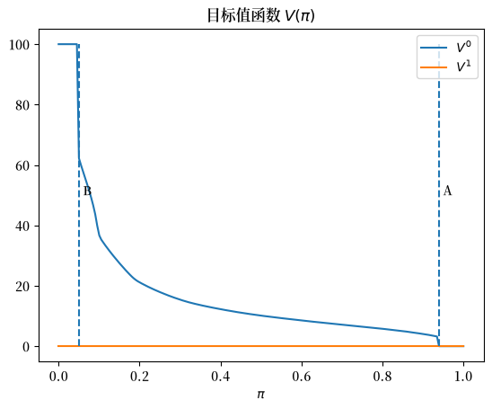
给定一个假设值 \(\pi^{*}=\Pr\left\{ \text{自然选择 }f_{0}\right\}\)，我们就可以 计算 \(\bar{V}_{Bayes}\left(\pi_{0}\right)\)。
然后我们可以确定一个初始贝叶斯先验概率 \(\pi_{0}^{*}\)，使其 最小化这个期望损失的客观概念。
下面的图展示了四种情况，分别对应 \(\pi^{*}=0.25,0.3,0.5,0.7\)。
我们观察到在每种情况下 \(\pi_{0}^{*}\) 都等于 \(\pi^{*}\)。
def compute_V_baye_bar(π_star, V0, V1, wf):
V_baye = π_star * V0 + (1 - π_star) * V1
π_idx = np.argmin(V_baye)
π_optimal = wf.π_grid[π_idx]
V_baye_bar = V_baye[π_idx]
return V_baye, π_optimal, V_baye_bar
π_star_arr = [0.25, 0.3, 0.5, 0.7]
fig, axs = plt.subplots(2, 2, figsize=(15, 10))
for i, π_star in enumerate(π_star_arr):
row_i = i // 2
col_i = i % 2
V_baye, π_optimal, V_baye_bar = compute_V_baye_bar(π_star, V0, V1, wf)
axs[row_i, col_i].plot(wf.π_grid, V_baye)
axs[row_i, col_i].hlines(V_baye_bar, 0, 1, linestyle='--')
axs[row_i, col_i].vlines(π_optimal, V_baye_bar, V_baye.max(), linestyle='--')
axs[row_i, col_i].text(π_optimal+0.05, (V_baye_bar + V_baye.max()) / 2,
r'${\pi_0^*}=$'+f'{π_optimal:0.2f}')
axs[row_i, col_i].set_xlabel(r'$\pi$')
axs[row_i, col_i].set_ylabel(r'$\overline{V}_{baye}(\pi)$')
axs[row_i, col_i].set_title(r'$\pi^*=$' + f'{π_star}')
fig.suptitle(r'$\overline{V}_{baye}(\pi)=\pi^*V^0(\pi) + (1-\pi^*)V^1(\pi)$', fontsize=16)
plt.show()
findfont: Failed to find font weight normal, now using 600.
findfont: Failed to find font weight normal, now using 600.
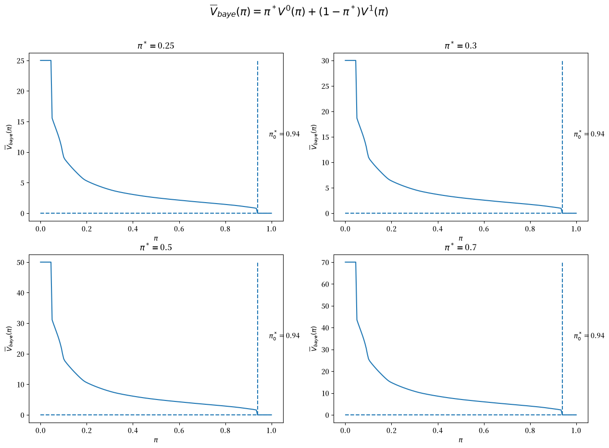
这种结果模式具有普遍性。
因此，以下Python代码生成相关图表，验证了对于所有的\(\pi^{*}\)值，\(\pi_{0}^{*}\)等于\(\pi^{*}\)这一等式都成立。
π_star_arr = np.linspace(0.1, 0.9, n_π)
V_baye_bar_arr = np.empty_like(π_star_arr)
π_optimal_arr = np.empty_like(π_star_arr)
for i, π_star in enumerate(π_star_arr):
V_baye, π_optimal, V_baye_bar = compute_V_baye_bar(π_star, V0, V1, wf)
V_baye_bar_arr[i] = V_baye_bar
π_optimal_arr[i] = π_optimal
fig, axs = plt.subplots(1, 2, figsize=(14, 5))
axs[0].plot(π_star_arr, V_baye_bar_arr)
axs[0].set_xlabel(r'$\pi^*$')
axs[0].set_title(r'$\overline{V}_{baye}$')
axs[1].plot(π_star_arr, π_optimal_arr, label='optimal prior')
axs[1].plot([π_star_arr.min(), π_star_arr.max()],
[π_star_arr.min(), π_star_arr.max()],
c='k', linestyle='--', label='45 degree line')
axs[1].set_xlabel(r'$\pi^*$')
axs[1].set_title(r'给定$\pi^*$的最优先验')
axs[1].legend()
plt.show()
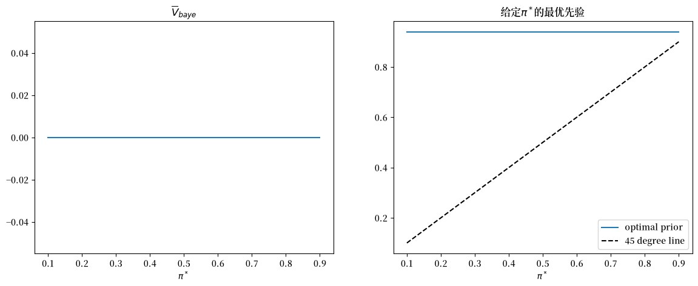
33.5. 海军上尉的直觉是否正确？#
现在我们比较通过频率派Neyman-Pearson规则和贝叶斯决策规则得到的平均损失。
让我们先从比较\(\pi^{*}=0.5\)时的平均损失函数开始。
π_star = 0.5
# 频率派
V_fre_arr, PFA_arr, PD_arr = compute_V_fre(L0_arr, L1_arr, π_star, wf)
# 贝叶斯派
V_baye = π_star * V0 + (1 - π_star) * V1
V_baye_bar = V_baye.min()
plt.plot(range(T), V_fre_arr, label=r'$\min_{d} \overline{V}_{fre}(t,d)$')
plt.plot([0, T], [V_baye_bar, V_baye_bar], label=r'$\overline{V}_{baye}$')
plt.xlabel('t')
plt.title(r'$\pi^*=0.5$')
plt.legend()
plt.show()
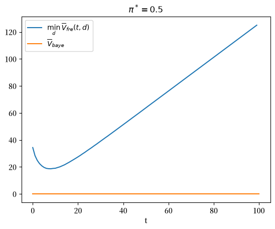
显然，在任何样本量 \(t\) 下，Neyman-Pearson决策规则都无法获得比贝叶斯规则更低的损失函数。
此外，下图表明贝叶斯决策规则在所有 \(\pi^{*}\) 值上平均表现都更好。
fig, axs = plt.subplots(1, 2, figsize=(14, 5))
axs[0].plot(π_star_arr, V_fre_bar_arr, label=r'$\overline{V}_{fre}$')
axs[0].plot(π_star_arr, V_baye_bar_arr, label=r'$\overline{V}_{baye}$')
axs[0].legend()
axs[0].set_xlabel(r'$\pi^*$')
axs[1].plot(π_star_arr, V_fre_bar_arr - V_baye_bar_arr, label='$diff$')
axs[1].legend()
axs[1].set_xlabel(r'$\pi^*$')
plt.show()
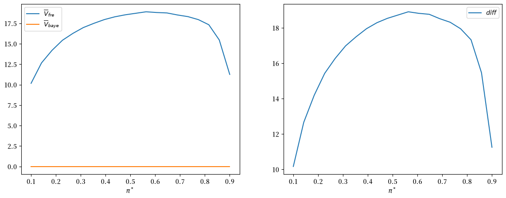
上图右侧面板绘制了差值\(\bar{V}_{fre}-\bar{V}_{Bayes}\)。
这个差值始终为正值。
33.6. 更多细节#
我们可以通过聚焦于\(\pi^{*}=0.5=\pi_{0}\)的情况来提供更多见解。
π_star = 0.5
回顾当\(\pi^*=0.5\)时，频率派Neyman-Pearson决策规则会事先设定一个样本量t_optimal。
对于我们的参数设置，我们可以计算它的值：
t_optimal
np.int64(9)
为了方便，让我们将 t_idx 定义为对应于 t_optimal 样本量的 Python 数组索引。
t_idx = t_optimal - 1
33.7. 贝叶斯决策规则的决策时间分布#
通过模拟，我们计算贝叶斯决策规则的决策时间频率分布，并将该时间与频率派规则的固定\(t\)进行比较。
以下Python代码创建了一个图表，显示了贝叶斯决策者的贝叶斯决策时间的频率分布，条件是数据由分布\(q=f_{0}\)或\(q=f_{1}\)生成。
蓝色和红色虚线显示了贝叶斯决策规则的平均值，而黑色虚线显示了频率派的最优样本量\(t\)。
当\(q=f_0\)时，贝叶斯规则平均比频率派规则更早做出决定，而当\(q=f_1\)时则更晚做出决定。
@jit(parallel=True)
def check_results(L_arr, A, B, flag, π0):
N, T = L_arr.shape
time_arr = np.empty(N)
correctness = np.empty(N)
π_arr = π0 * L_arr / (π0 * L_arr + 1 - π0)
for i in prange(N):
for t in range(T):
if (π_arr[i, t] < B) or (π_arr[i, t] > A):
time_arr[i] = t + 1
correctness[i] = (flag == 0 and π_arr[i, t] > A) or (flag == 1 and π_arr[i, t] < B)
break
return time_arr, correctness
time_arr0, correctness0 = check_results(L0_arr, A, B, 0, π_star)
time_arr1, correctness1 = check_results(L1_arr, A, B, 1, π_star)
# 无条件分布
time_arr_u = np.concatenate((time_arr0, time_arr1))
correctness_u = np.concatenate((correctness0, correctness1))
n1 = plt.hist(time_arr0, bins=range(1, 30), alpha=0.4, label='f0生成')[0]
n2 = plt.hist(time_arr1, bins=range(1, 30), alpha=0.4, label='f1生成')[0]
plt.vlines(t_optimal, 0, max(n1.max(), n2.max()), linestyle='--', label='频率派')
plt.vlines(np.mean(time_arr0), 0, max(n1.max(), n2.max()),
linestyle='--', color='b', label='f0下的E(t)')
plt.vlines(np.mean(time_arr1), 0, max(n1.max(), n2.max()),
linestyle='--', color='r', label='f1下的E(t)')
plt.legend();
plt.xlabel('t')
plt.ylabel('n')
plt.title('时间的条件频率分布')
plt.show()
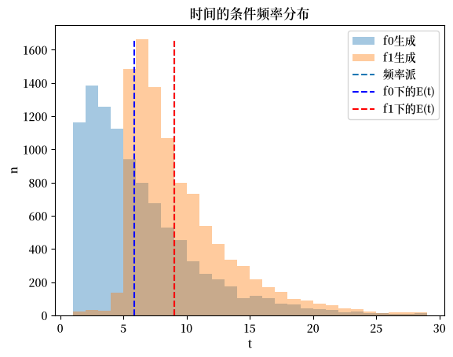
稍后我们将弄清这些分布最终如何影响Neyman-Pearson和贝叶斯决策规则下的客观期望值。
首先，让我们看看贝叶斯信念随时间的模拟。
利用本讲似然比过程中描述的从\(L_{t}\)到\(\pi_{t}\)的一一映射（给定\(\pi_0\)），我们可以计算任意时间\(t\)的更新信念。
π0_arr = π_star * L0_arr / (π_star * L0_arr + 1 - π_star)
π1_arr = π_star * L1_arr / (π_star * L1_arr + 1 - π_star)
fig, axs = plt.subplots(1, 2, figsize=(14, 4))
axs[0].plot(np.arange(1, π0_arr.shape[1]+1), np.mean(π0_arr, 0), label='f0生成')
axs[0].plot(np.arange(1, π1_arr.shape[1]+1), 1 - np.mean(π1_arr, 0), label='f1生成')
axs[0].set_xlabel('t')
axs[0].set_ylabel(r'$E(\pi_t)$ 或 ($1 - E(\pi_t)$)')
axs[0].set_title('抽取t个观测值后信念的期望')
axs[0].legend()
axs[1].plot(np.arange(1, π0_arr.shape[1]+1), np.var(π0_arr, 0), label='f0生成')
axs[1].plot(np.arange(1, π1_arr.shape[1]+1), np.var(π1_arr, 0), label='f1生成')
axs[1].set_xlabel('t')
axs[1].set_ylabel(r'var($\pi_t$)')
axs[1].set_title('抽取t个观测值后信念的方差')
axs[1].legend()
plt.show()
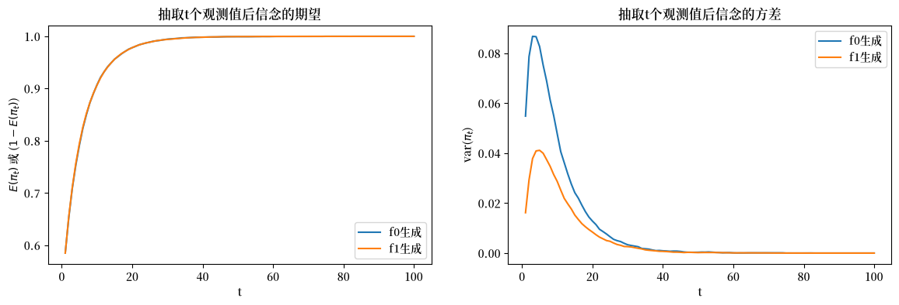
上图比较了经过\(t\)次抽样后贝叶斯后验分布的均值和方差。
左图比较了\(f_{0}\)下的\(E\left(\pi_{t}\right)\)和\(f_{1}\)下的\(1-E\left(\pi_{t}\right)\)：它们完全重合。
然而,如右图所示,当\(t\)较小时方差存在显著差异：在\(f_{1}\)下方差更小。
方差的差异是贝叶斯决策者在\(f_{1}\)生成数据时等待更长时间才做出决定的原因。
下面的代码通过简单地将两个可能分布\(f_0\)和\(f_1\)的模拟数据合并,绘制了无条件分布的结果。
这个合并分布从某种意义上描述了贝叶斯决策者平均会更早做出决定,这似乎在一定程度上证实了海军上尉的直觉判断。
n = plt.hist(time_arr_u, bins=range(1, 30), alpha=0.4, label='bayesian')[0]
plt.vlines(np.mean(time_arr_u), 0, n.max(), linestyle='--',
color='b', label='bayesian E(t)')
plt.vlines(t_optimal, 0, n.max(), linestyle='--', label='frequentist')
plt.legend()
plt.xlabel('t')
plt.ylabel('n')
plt.title('时间的无条件分布')
plt.show()
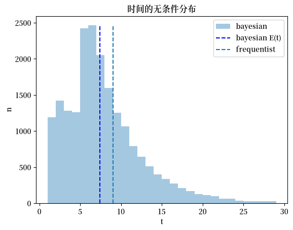
33.8. 做出正确决策的概率#
现在我们使用模拟来计算贝叶斯和频率派Neyman-Pearson决策规则做出正确决定的样本比例。
对于频率派Neyman-Pearson规则，在\(f_{1}\)下做出正确决定的概率是我们之前定义的给定\(t\)时的最优检测概率，同样地，它等于1减去\(f_{0}\)下的最优虚警概率。
下面我们绘制频率派规则的这两个概率，以及贝叶斯规则在\(t\)之前做出决定且决定正确的条件概率。
# 频率派最优样本量下的最优虚警概率和检测概率
V, PFA, PD = V_fre_t(t_optimal, L0_arr, L1_arr, π_star, wf)
plt.plot([1, 20], [PD, PD], linestyle='--', label='PD: 正确选择f1的频率')
plt.plot([1, 20], [1-PFA, 1-PFA], linestyle='--', label='1-PFA: 正确选择f0的频率')
plt.vlines(t_optimal, 0, 1, linestyle='--', label='频率论最优样本量')
N = time_arr0.size
T_arr = np.arange(1, 21)
plt.plot(T_arr, [np.sum(correctness0[time_arr0 <= t] == 1) / N for t in T_arr],
label='q=f0且贝叶斯选择f0')
plt.plot(T_arr, [np.sum(correctness1[time_arr1 <= t] == 1) / N for t in T_arr],
label='q=f1且贝叶斯选择f1')
plt.legend(loc=4)
plt.xlabel('t')
plt.ylabel('概率')
plt.title('t之前做出正确决定的条件概率')
plt.show()
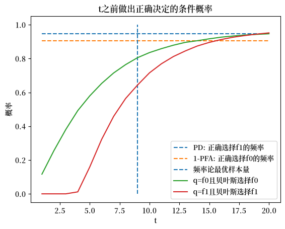
通过使用 \(\pi^{*}\) 进行平均，我们还绘制了无条件分布。
plt.plot([1, 20], [(PD + 1 - PFA) / 2, (PD + 1 - PFA) / 2],
linestyle='--', label='频率派正确决策')
plt.vlines(t_optimal, 0, 1, linestyle='--', label='频率派最优样本量')
N = time_arr_u.size
plt.plot(T_arr, [np.sum(correctness_u[time_arr_u <= t] == 1) / N for t in T_arr],
label="贝叶斯派正确决策")
plt.legend()
plt.xlabel('t')
plt.ylabel('概率')
plt.title('t时刻前做出正确决策的无条件概率')
plt.show()
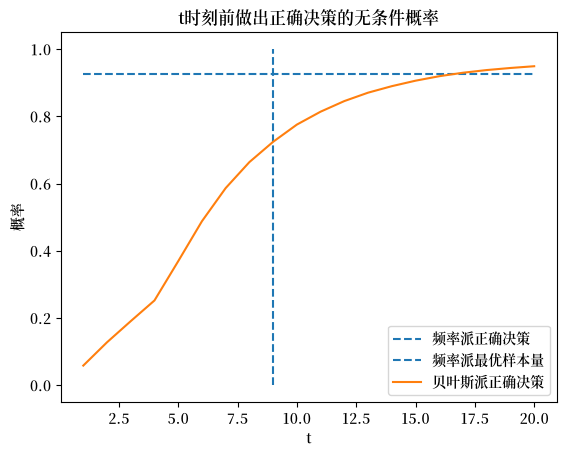
33.9. Neyman-Pearson的\(t\)处的似然比分布#
接下来我们使用模拟来构建在 \(t\) 次抽样后的似然比分布。
作为有用的参考点，我们还展示了对应于贝叶斯截断值 \(A\) 和 \(B\) 的似然比。
为了更清晰地展示分布，我们报告似然比的对数值。
下面的图表报告了两个分布，一个是在 \(f_0\) 生成数据的条件下的分布，另一个是在 \(f_1\) 生成数据的条件下的分布。
LA = (1 - π_star) * A / (π_star - π_star * A)
LB = (1 - π_star) * B / (π_star - π_star * B)
L_min = min(L0_arr[:, t_idx].min(), L1_arr[:, t_idx].min())
L_max = max(L0_arr[:, t_idx].max(), L1_arr[:, t_idx].max())
bin_range = np.linspace(np.log(L_min), np.log(L_max), 50)
n0 = plt.hist(np.log(L0_arr[:, t_idx]), bins=bin_range, alpha=0.4, label='f0生成')[0]
n1 = plt.hist(np.log(L1_arr[:, t_idx]), bins=bin_range, alpha=0.4, label='f1生成')[0]
plt.vlines(np.log(LB), 0, max(n0.max(), n1.max()), linestyle='--', color='r', label='log($L_B$)')
plt.vlines(np.log(LA), 0, max(n0.max(), n1.max()), linestyle='--', color='b', label='log($L_A$)')
plt.legend()
plt.xlabel('log(L)')
plt.ylabel('n')
plt.title('频率学派t时对数似然比的条件分布')
plt.show()
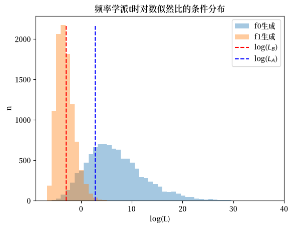
下一个图表绘制了贝叶斯决策时间的无条件分布，这是通过将两个条件分布合并而构建的。
plt.hist(np.log(np.concatenate([L0_arr[:, t_idx], L1_arr[:, t_idx]])),
bins=50, alpha=0.4, label='log(L)的无条件分布')
plt.vlines(np.log(LB), 0, max(n0.max(), n1.max()), linestyle='--', color='r', label='log($L_B$)')
plt.vlines(np.log(LA), 0, max(n0.max(), n1.max()), linestyle='--', color='b', label='log($L_A$)')
plt.legend()
plt.xlabel('log(L)')
plt.ylabel('n')
plt.title('频率论者t时刻的对数似然比的无条件分布')
plt.show()
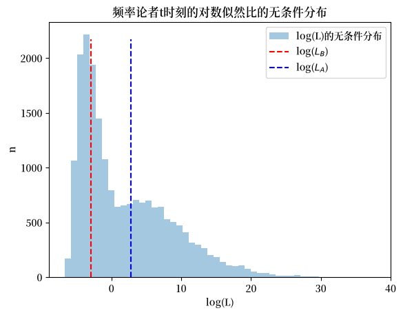